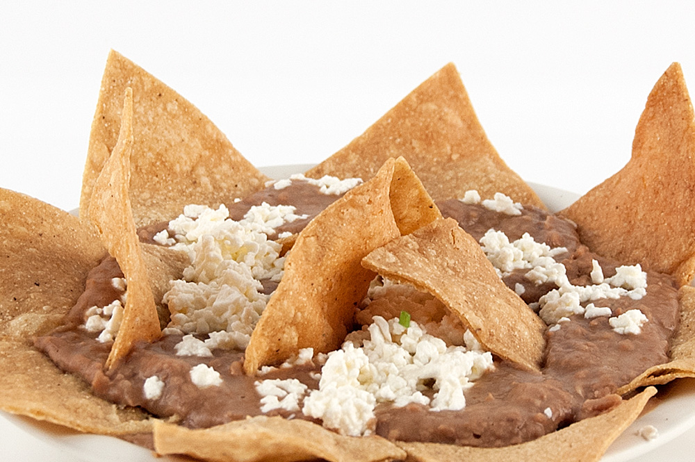

Refried Beans

Description
Refried beans originated in Mexico about a hundred years ago. It is considered a staple in most Mexican dishes. Beans contain many beneficial nutritional values. They are rich in protein and contain large amounts of fiber and polyphenol antioxidants.
Recipes vary from region to region. This is the most popular recipe in Mexico.
Ingredients
- Boiled beans (pinto or peruano beans are most popular)
- 2 tablespoons of vegetable oil
Steps
- Pour the cooking oil intro a frying pan
- Heat frying pan to a medium to medium-high temperature
- Place boiled beans into the pan and add some of the boiled bean liquid as well
- Smash them until desired consistency and viscosity
- Can be served with cotija cheese or queso fresco cheese, enjoy!